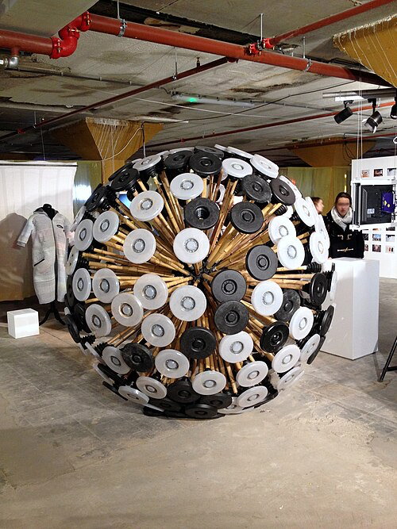

Critical Objects
What are They?
Critical objects are strange things. They are Objects, physical tangible things, which are Critical, which exists in the ephemeral world of clouds as ideas and discussions.
They are "Not the same as speculative design or speculative design fiction" and "not critical art"
They are Fully Functional prototypes which Perform a Critique.
They "Inherently perform the function of inciting discussion or critique."
Maybe the best example is the Mine Kafon, a mine clearing device which transcends its literal role (lol) to start a discussion around the removal of leftover landmines.
https://en.wikipedia.org/wiki/Mine_Kafon_Drone
In this class, we are using a non-prescriptive framework developed by Pedro to analyze such devices.
Analysis Framework:
Topic – What the device is about, this is easy to distill and digest
Device – How the device communicates as a literary object, sarcasm, metaphor, juxtaposition
Attribute – The essential aspects, be it wearable, edible, interactive, data driven
Mood – The overall vibe of the thing, how it is experienced.
Mine Kafon Analysis Example:
The topic is warfare, specifically the use of mines in war and the impact they have on people after fighting ends
The device is metaphor because the device loses limbs like people, it starts whole and is torn apart by engagement with the mines in the landscape.
The attribute is mobile
The mood is a sort of DIY futurism